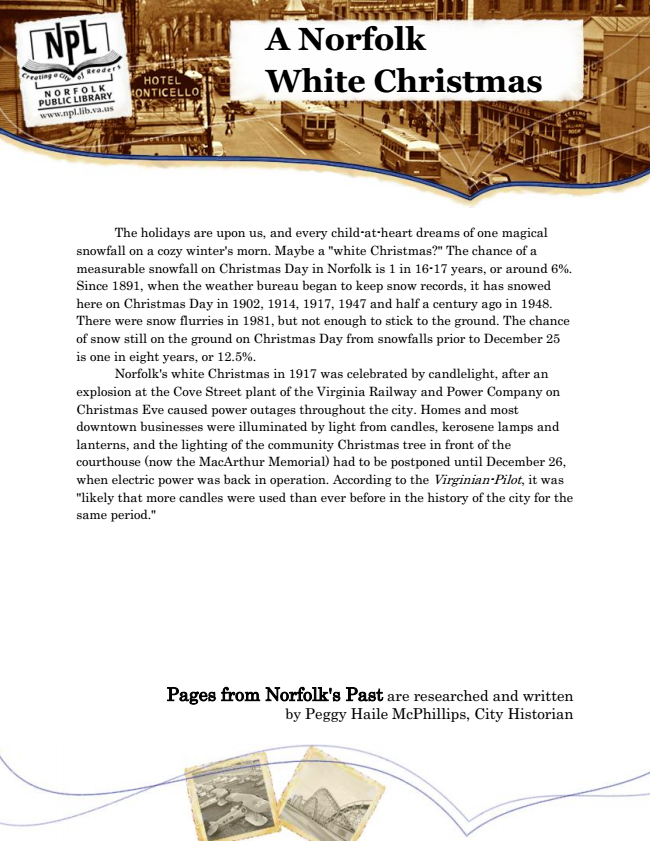

A Norfolk White Christmas
The holidays are upon us, and every child-at-heart dreams of one magical snowfall on a cozy winter's morn. Maybe a "white Christmas?" The chance of a measurable snowfall on Christmas Day in Norfolk is 1 in 16-17 years, or around 6%. Since 1891, when the weather bureau began to keep snow records, it has snowed here on Christmas Day in 1902, 1914, 1917, 1947 and half a century ago in 1948. There were snow flurries in 1981, but not enough to stick to the ground. The chance of snow still on the ground on Christmas Day from snowfalls prior to December 25 is one in eight years, or 12.5%.
Norfolk's white Christmas in 1917 was celebrated by candlelight, after an explosion at the Cove Street plant of the Virginia Railway and Power Company on Christmas Eve caused power outages throughout the city. Homes and most downtown businesses were illuminated by light from candles, kerosene lamps and lanterns, and the lighting of the community Christmas tree in front of the courthouse (now the MacArthur Memorial) had to be postponed until December 26, when electric power was back in operation. According to the Virginian-Pilot, it was "likely that more candles were used than ever before in the history of the city for the same period."
Pages from Norfolk's Past are researched and written by Peggy Haile McPhillips, City Historian